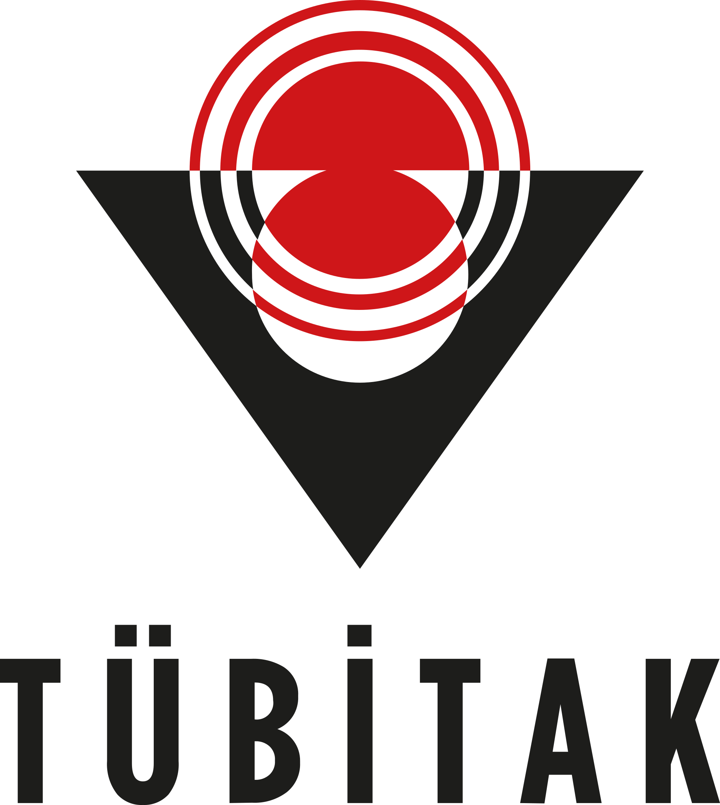

Dijital denge ipucu
Oyuna başlayınca her seçimin hangi değeri etkilediği burada görünecek.
Menüden ana menüye dönebilir, oyun sırasında sağ panelden oyunu mevcut puanlarınla bitirebilirsin.

6 kısa sosyal medya durumunda karar ver. Seçimlerin saygı, doğruluk, sorumluluk ve dijital nezaket dengenin nasıl değiştiğini gösterir.
“Sosyal medyada değerlerimizi korumak için hangi davranışı değiştirmeliyiz?”
Çarkı çevir, sosyal medya kullanımını dengeleyen kısa bir görev seç. Görevi standdan ayrılmadan ya da gün içinde tamamlayabilirsin.
Görev çıkınca kısa öneri burada görünecek.
Dijital davranış
Oyuna başlayınca her seçimin hangi değeri etkilediği burada görünecek.